이야기
봉쇄, 그리고 가스
감염 사태가 번지자 정부는 서울을 봉쇄했어요. 국가 재난 사태가 내려졌지만 봉쇄가 너무 빨라 미처 나오지 못한 사람이 많았어요. 남은 사람들은 모여서 버티거나, 남의 것을 빼앗으며 살아가요.
감염체의 시체가 쌓인 곳에는 썩은 가스가 고여요. 높은 방벽에 막혀 흩어지지도 않아요. 조금 마셔서는 괜찮지만, 몸에 쌓인 양을 늘 살펴야 해요.
구조는 끊겼어요. 나가는 길은 스스로 찾아야 해요.
봉쇄된 서울에서 버티는 도트 생존 게임이에요. 셸터에서 짐을 챙겨 건물 안으로 들어가고, 뒤지고 싸운 뒤 위로 올라가 빠져나와요. 살아 나오면 가져온 것이 내 것이에요.
예고 영상 · 소리 없음
감염 사태가 번지자 정부는 서울을 봉쇄했어요. 국가 재난 사태가 내려졌지만 봉쇄가 너무 빨라 미처 나오지 못한 사람이 많았어요. 남은 사람들은 모여서 버티거나, 남의 것을 빼앗으며 살아가요.
감염체의 시체가 쌓인 곳에는 썩은 가스가 고여요. 높은 방벽에 막혀 흩어지지도 않아요. 조금 마셔서는 괜찮지만, 몸에 쌓인 양을 늘 살펴야 해요.
구조는 끊겼어요. 나가는 길은 스스로 찾아야 해요.
땅 위 출구가 아니라 위로 올라가서 나가요. 한 판은 이렇게 흘러가요.
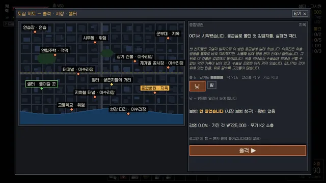
출격 지도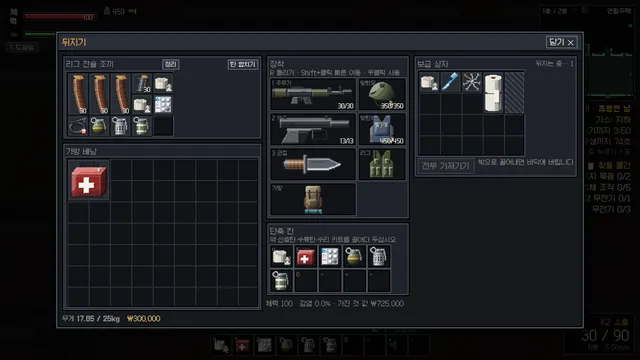
뒤지기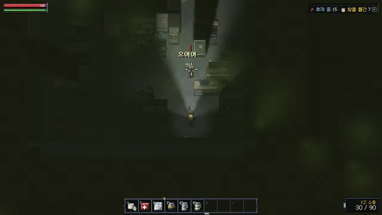
가스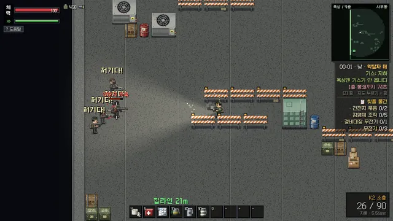
옥상판마다 방 · 계단 · 출입구 · 상자 자리가 바뀌어요. 같은 건물이라도 낮과 밤, 비, 정전, 가스 누출에 따라 다른 판이 돼요. 아래 설명은 게임 속 출격 지도에 적힌 글 그대로예요.
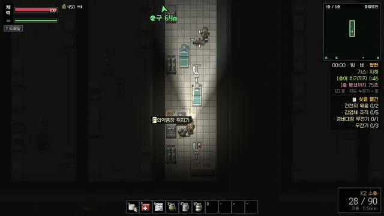
여기서 시작됐습니다. 응급실에 실려 온 첫 환자 하나, 실패한 격리.
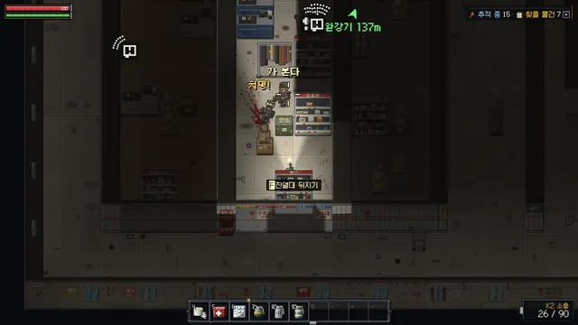
봉쇄 전날 사재기 인파가 몰렸다가, 안에서 터졌습니다.
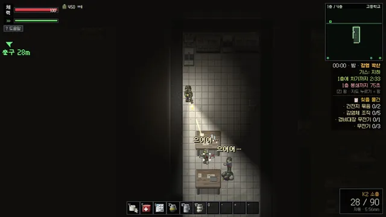
임시 대피소로 쓰이던 학교. 체육관에 모인 사람들 중 한 명이 감염돼 있었습니다.
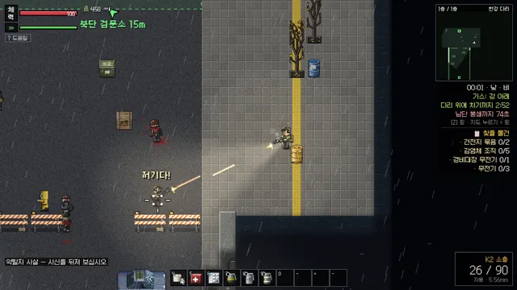
멈춘 차로 막힌 다리. 숨을 데는 차 뒤뿐이고, 북단 검문소는 약탈자 것입니다.
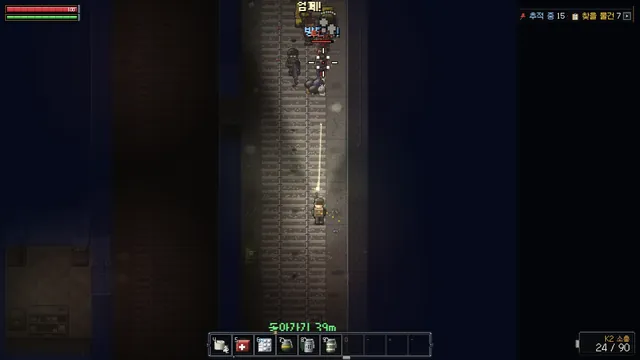
불 꺼진 선로 두 줄. 가운데 역은 약탈자 진지고, 멈춘 전동차가 길을 막습니다.
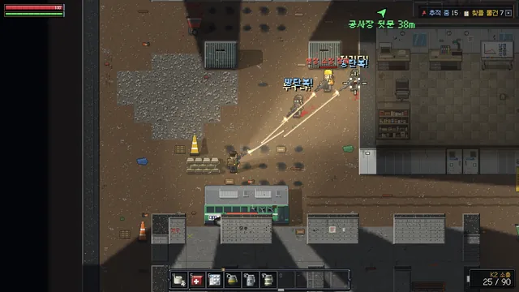
담장 안 흙바닥에 짓다 만 뼈대와 컨테이너. 사방이 트여 있고, 뒷문은 약탈자가 지킵니다.
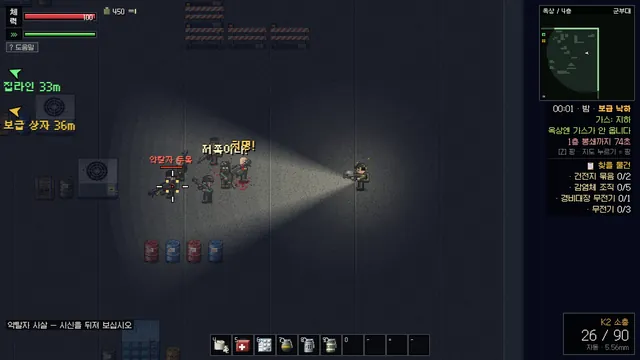
부대가 무너지자 일부는 탈영해 무기고를 열었습니다. 지금은 그들 것입니다.
사태 첫 주에 비워진 다세대. 못 들고 간 살림만 남았습니다.
월요일 오전 회의 중에 대피 방송이 났습니다. 비상계단에서 사람들이 엉켰습니다.
열차가 멈추던 순간 승강장에 갇힌 사람들. 전기는 끊기고 비상등만 남았습니다.
봉쇄선 너머로 가는 마지막 길. 방송국 옥상 헬기장에 헬기가 옵니다.
소리가 벽을 따라 퍼지고, 적도 그 소리를 듣고 찾아와요. 손전등 불빛도 내 자리를 알려요.
엄폐물 뒤에 숨고 수류탄을 던지고, 옥상에서 저격해요. 건물마다 이름 있는 두목이 있어요.
감염체와 약탈자는 서로도 싸워요. 벽돌을 던져 소리로 꾀어내고, 조용히 걸어 등 뒤로 지나갈 수 있어요.
소음기 · 조준경 · 대용량 탄창 같은 부착물을 달고 뗄 수 있어요. 근접 무기도 있어요.
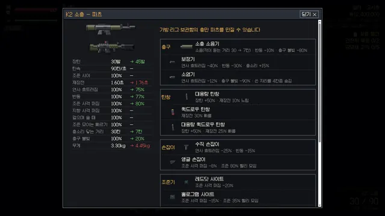
부착물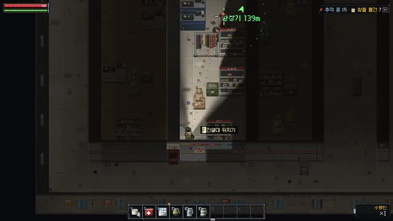
던지기살아 돌아온 물건은 내 집에 쌓여요. 집을 넓히고, 가구를 놓고, 가져온 것을 진열해요.
집마다 그 집다운 곳이 있어요. 반지하의 쇠창살 창, 옥탑방 장독대, 빌라의 통유리 베란다, 펜트하우스의 유리 난간 테라스.
가구를 놓고, 바닥재와 벽지를 칸마다 바꿔요. 잘못 놓으면 Ctrl + Z 로 되돌려요.
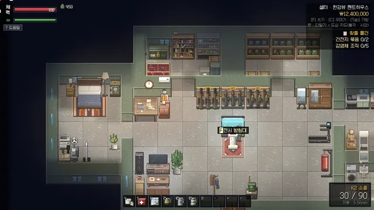
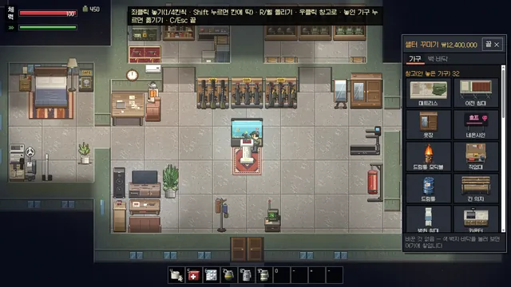
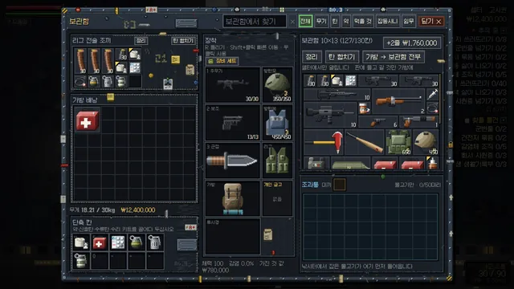
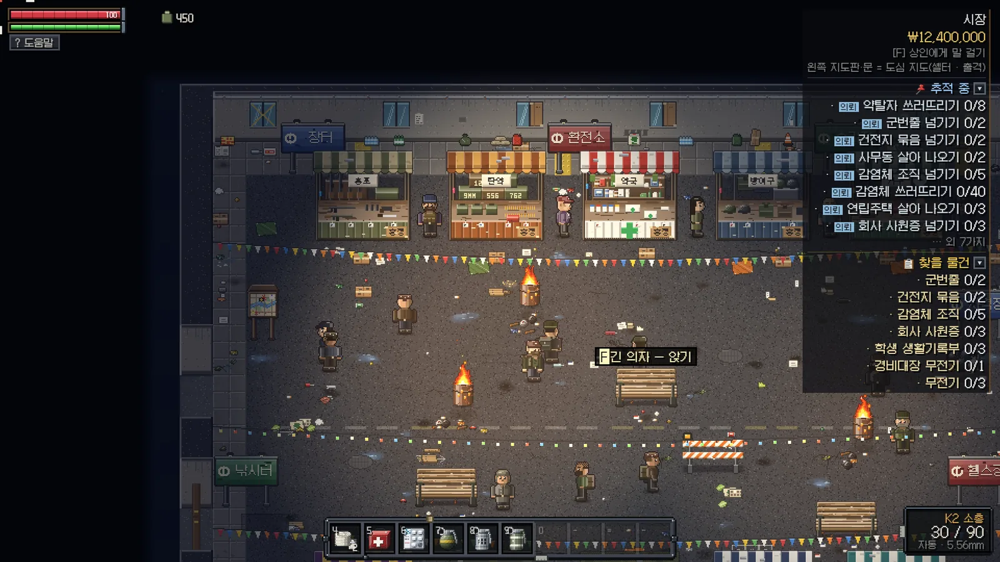
장터 사람들의 이야기를 따라 임무를 해요. 결말은 넷이에요.
상인 의뢰, 일일 · 주간 과제, 현상금, 갇힌 생존자 구조.
주간 도전과 순위표. 처음부터 다시 하는 회차에도 쌓인 덤은 남아요.
부품을 골라 꾸미거나, 도트를 한 칸씩 직접 찍어 내 캐릭터를 만들어요.
집에 가져온 물건을 진열장에 올려 두고 모아요.
그림 · 소리 · 가구를 직접 만들어 넣을 수 있어요.
키는 Esc → 설정에서 바꿀 수 있어요.
모두 개발 중인 게임에서 찍은 화면이에요. 누르면 크게 볼 수 있어요.
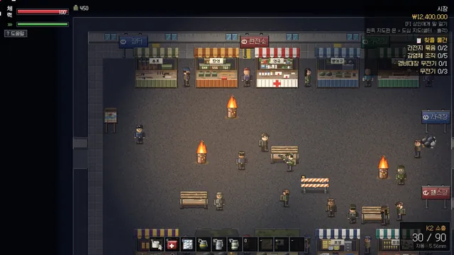
장터영상은 영상 페이지에 모아 두었어요.
판(버전)마다 바뀐 것을 적어요. 가장 새것이 위에 있어요.